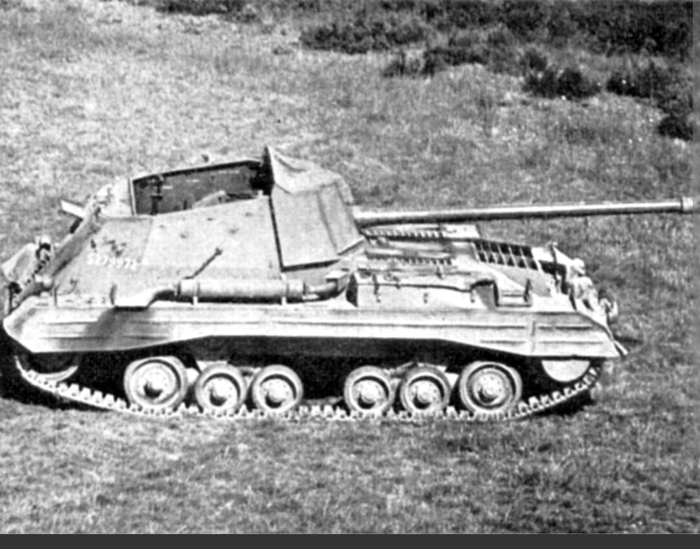
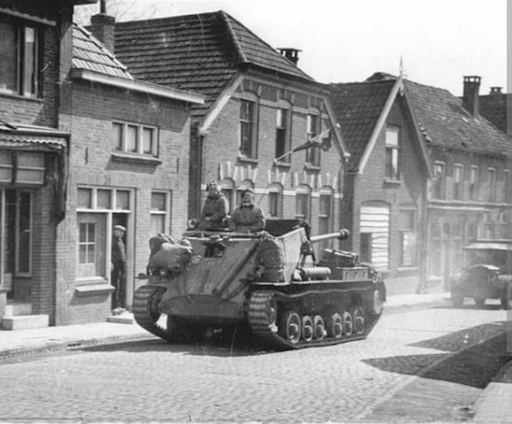
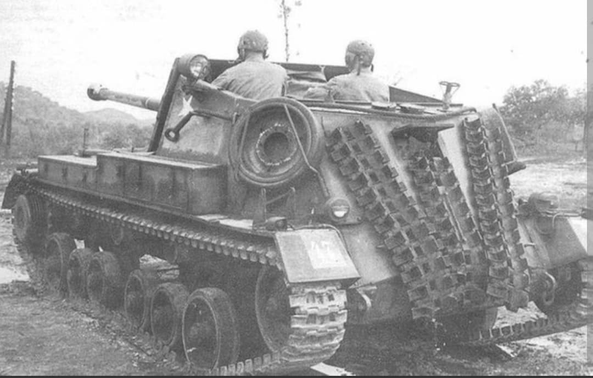

L'affût autopropulsé atypique armé du canon de 17 livres orienté vers l'arrière

L'Archer (officiellement désigné SP 17pdr, Valentine, Mk I) est un canon automoteur antichar britannique conçu durant la Seconde Guerre mondiale.
Conçu pour monter le redoutable canon de **17 livres (17-pdr)** sur un châssis existant compact, l'Archer se distingue par une configuration tactique unique : son canon tire vers l'arrière du véhicule, ce qui s'est révélé être un avantage considérable pour la tactique de « tir et décrochage » (*hit-and-run*).
Face à la nécessité urgente de mécaniser le canon antichar de 17 livres (76,2 mm), les ingénieurs d'Vickers-Armstrongs ont choisi d'utiliser le châssis du char d'infanterie Valentine, éprouvé et très fiable.
Le châssis du Valentine étant relativement court, il était impossible de monter le long tube du 17-pdr orienté vers l'avant sans déséquilibrer gravement le véhicule. La solution consista à installer le canon dans une superstructure blindée ouverte sur le dessus, pointé vers l'arrière du châssis.
Cette disposition présentait un atout tactique précieux en embuscade : le véhicule pouvait se positionner face à sa voie de repli derrière un abri, effectuer ses tirs contre les blindés ennemis, puis démarrer immédiatement en marche avant pour se replier sans perdre de temps à faire demi-tour.

Entré en service à la fin de l'année 1944, l'Archer fut déployé au sein des régiments antichars de l'armée britannique et du Commonwealth sur le front de l'Ouest (Bataille des Ardennes, franchissement du Rhin) et durant la campagne d'Italie.
Bien que son profil bas et la garde au toit ouverte exigeaient une grande discipline des équipages sous les tirs d'artillerie et de mortiers, sa capacité à détruire n'importe quel char lourd allemand (Panther, Tiger I et II) à grande distance en faisait une arme défensive redoutable.

Commandé initialement à 800 exemplaires, **665 unités** ont été produites par Vickers avant la fin des hostilités.
Après la guerre, l'Archer est resté en service au sein de la British Army jusqu'au milieu des années 1950 et a également été fourni à l'armée égyptienne, qui l'a réutilisé lors de la crise du canal de Suez en 1956.
Page du Musée HOP WW2 – Section Véhicules Terrestres Britanniques